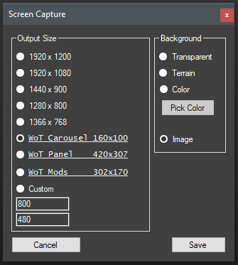

Tank Exporter allows you to take pictures of the current screen.
After you load a tank or import an FBX, use Screen Capture under the Export/Extract menu item.
The zoom and position of the view effects the saved image.
Screen Capture only writes PNG files.
|  | I have given you a nice selection of sizes to save your PNG. Pick the background type and click Save. If you want to create an image for a forum signature (114 x 64), I recommend using color background and setting the color to match that of the forums. The reason for this is anti-aliasing works with colors and not alpha/transparent backgrounds. |